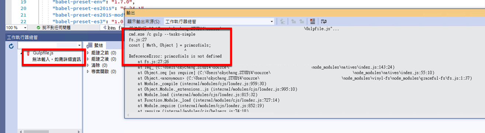
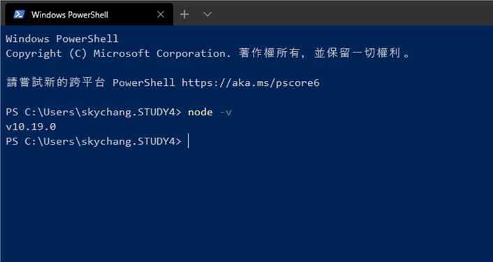
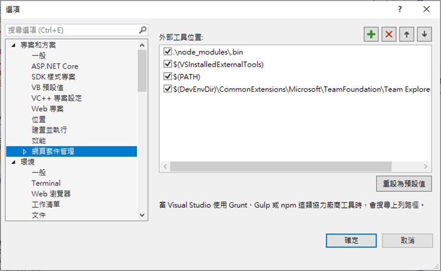

前言
如果很早就開始玩 JS 打包的 Visual Studio 工程師，一定對於 Task Runner Explorer 有很深刻的印象，在某些情境，Task Runner Explorer 是很方便的，他可以透過整合 Visual Studio，讓你在 Visual Studio 裡面寫完 JS 後，透過 Task Runner Exploere 的點擊，就可以執行 Gulp 等等的行為。隨然在這個時代，前端大概都是透過 VS Code，和搭配指令的方式處理了，但早期的一些專案，還是有用 Task Runner Explorer 來處理。
問題 gulp 3.9 和 Node.js 12.x
首先，在看 Task Runner Explorer 和 node 關係前，其實是在解決另外一個問題的，這個問題主要是 gulp 3.9 和 Node.js 12.x 的問題。
如下圖..
發生了底下的錯誤
fs.js:27
const { Math, Object } = primordials;
^
ReferenceError: primordials is not defined

解決 gulp 3.9 和 Node.js 12.x
至於這個，其實算是容易解的，網路上也很容易查到，簡單的說，就是 gulp 3.9 不支援 Node.js 12.x，所以 Node.js 降版到 10.x 就可以了..
( Node.js 單號是短期支援，所以用偶數為主 )
真正的問題
但真正的問題很妙，因為配合這個專案，小弟其實已經裝了 Node.js 10.x 的版本。

但結果 Task Runner Explorer 還是拼命地出現不相容 Node.js 12.x 的這個錯誤 ( 怒 )
真正的結果
後來查閱後才發現，原來 Visual Studio 裡面是有內建 Node.js，而且會依據底下的順序尋找…

沒錯，他會先收尋專案目錄底下的 nod_modules 位置。
然後會搜尋 $(VisualStudioExternalTool) 這個變數路徑…
而重點就是這個變數路徑…
他會指向到 C:\Program Files (x86)\Microsoft Visual Studio\2019\Preview\MSBuild\Microsoft\VisualStudio
然後裡面藏著 Node.js ….. 而且是 v12.x 版本 ( 翻桌 )

那解決方案呢，就是回到上上圖，Visual Studio 的設定，讓他的搜尋順序改變，讓 PATH 先抓到，就可以吃到我們自己裝的 Node.js 了….
後記
好吧，我承認，我都是用 CMD 和自己裝，所以踩到這個冷坑….但如果有需要的朋友，可能要注意一下…